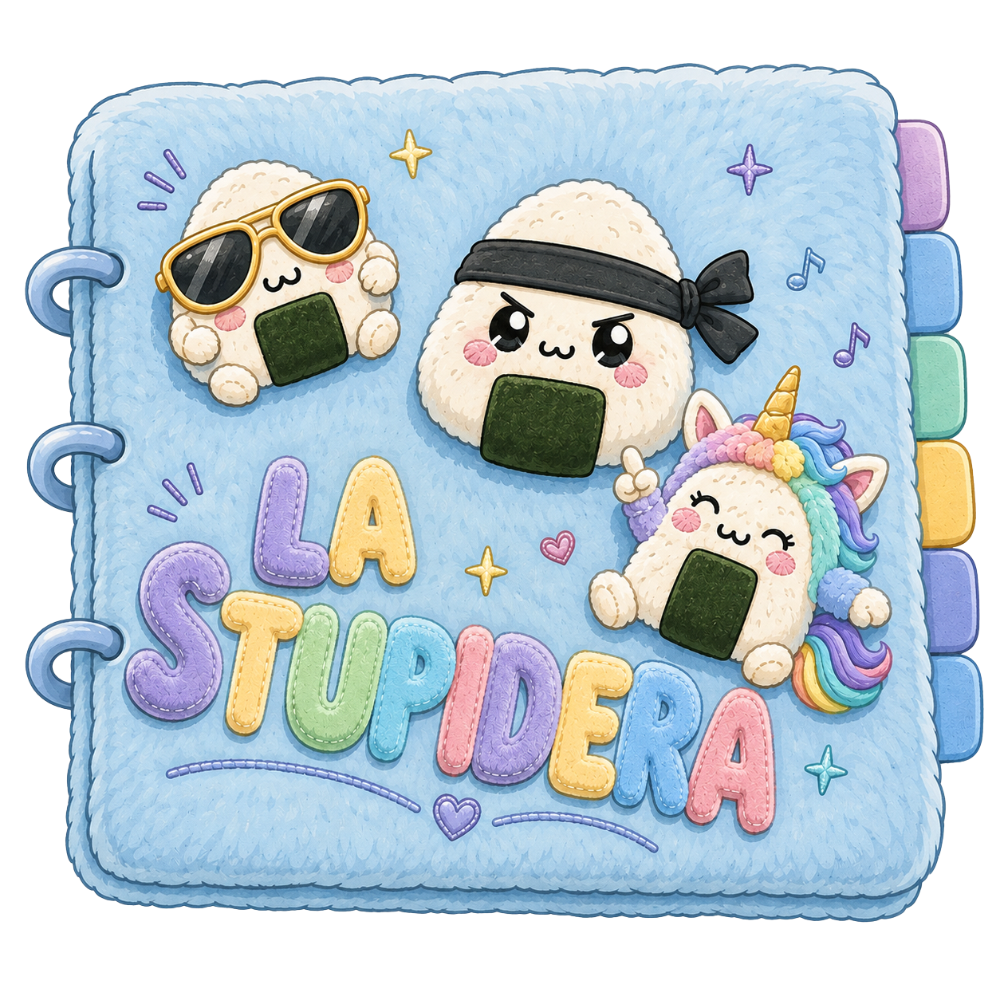

<!-- =========================================================
LA STUPIDERA — PACCHETTO DI INTEGRAZIONE
========================================================= -->

<!-- 1) CSS: aggiungere prima della media query "SCHERMI STRETTI" -->
<style>
.stupidera-screen {
  position: fixed; inset: 0; display: none;
  align-items: center; justify-content: center;
  padding: max(18px, env(safe-area-inset-top))
           max(18px, env(safe-area-inset-right))
           max(18px, env(safe-area-inset-bottom))
           max(18px, env(safe-area-inset-left));
  background: linear-gradient(180deg, #eaf3fb 0%, #f7f2fb 100%);
  z-index: 260;
}
.stupidera-screen.aperto { display: flex; }
.stupidera-stage {
  position: relative; width: min(96vw, 1100px); height: min(94vh, 900px);
  display: flex; align-items: center; justify-content: center;
}
.stupidera-image {
  display: block; max-width: 100%; max-height: 100%; object-fit: contain;
  user-select: none; -webkit-user-select: none; -webkit-user-drag: none;
}
.stupidera-clickable { cursor: pointer; }
.stupidera-back {
  position: absolute; top: 0; left: 0; appearance: none; border: 0;
  width: 50px; height: 50px; border-radius: 16px;
  background: rgba(255,255,255,.82); color: #4c4274;
  font-size: 30px; line-height: 1; cursor: pointer;
  box-shadow: 0 5px 14px rgba(65,55,90,.12); z-index: 2;
}
</style>

<!-- 2) HTML: aggiungere dopo overlayNotebook -->
<section class="stupidera-screen" id="stupideraScreen">
  <div class="stupidera-stage">
    <button class="stupidera-back" id="stupideraBack"
            type="button" aria-label="Indietro">‹</button>
    
  </div>
</section>

<!--
3) HOTSPOT: sostituire l'hotspot data-target="overlayNotebook" con:

<rect
  class="hotspot"
  data-stupidera="true"
  x="790"
  y="580"
  width="330"
  height="245"
/>
-->

<!-- 4) JAVASCRIPT: aggiungere prima della sezione BASE -->
<script>
const stupideraScreen = document.getElementById("stupideraScreen");
const stupideraImage = document.getElementById("stupideraImage");
const stupideraBack = document.getElementById("stupideraBack");

const STUPIDERA_SCREENS = [
  { src: "assets/stupidera-copertina.png", alt: "Copertina della Stupidera" },
  { src: "assets/stupidera-intro.png", alt: "Introduzione della Stupidera" },
  { src: "assets/stupidera-pagine.png", alt: "Pagine della Stupidera" }
];

let stupideraPagina = 0;

function mostraStupideraPagina(indice) {
  stupideraPagina = Math.max(0, Math.min(indice, STUPIDERA_SCREENS.length - 1));
  const schermata = STUPIDERA_SCREENS[stupideraPagina];
  stupideraImage.src = schermata.src;
  stupideraImage.alt = schermata.alt;
  stupideraImage.classList.toggle(
    "stupidera-clickable",
    stupideraPagina < STUPIDERA_SCREENS.length - 1
  );
}

function apriStupidera() {
  stupideraPagina = 0;
  mostraStupideraPagina(0);
  stupideraScreen.classList.add("aperto");
}

function chiudiStupidera() {
  stupideraScreen.classList.remove("aperto");
  stupideraPagina = 0;
}

stupideraImage.addEventListener("click", () => {
  if (stupideraPagina < STUPIDERA_SCREENS.length - 1) {
    mostraStupideraPagina(stupideraPagina + 1);
  }
});

stupideraBack.addEventListener("click", () => {
  if (stupideraPagina > 0) {
    mostraStupideraPagina(stupideraPagina - 1);
  } else {
    chiudiStupidera();
  }
});
</script>

<!--
5) Nel listener hotspots.forEach, PRIMA di:
const targetId = hotspot.dataset.target;

aggiungere:

const stupidera = hotspot.dataset.stupidera;
if (stupidera) {
  apriStupidera();
  return;
}
-->
